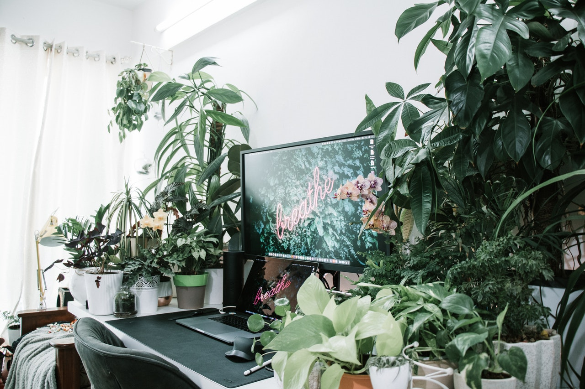

Option 2: Jungle

This is a cheery tree-hugger set up!
Advantages of this design:
- My air quality is surpurb
- I am not the only living thing inhabiting the room
- The green everywhere puts me in an excellent mood
Disadvantages of this design:
- My screen view is blocked by branches and leaves
- I have to water the damn plants every damn day
- Seeing one color may get boring after a while